24 CODE regions and 0 raster assets to review: 0 extract, 0 inpaint.
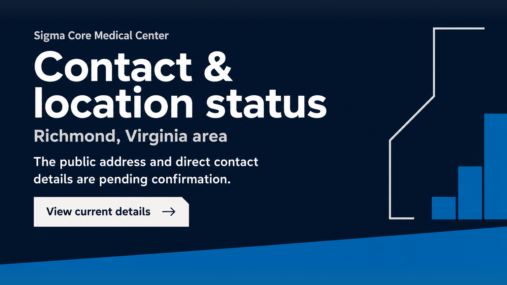
Never aria-hide the containing semantic section or content panel. background:#101E33; isolated position:relative. ::after bottom:0; width:100%; height:20.5%; background:#0666A5; clip-path:polygon(0 65%,100% 0,100% 100%,0 100%). Keep this behind content. This reproduces observed full-canvas polygon (0,802),(1536,687),(1536,864),(0,864).
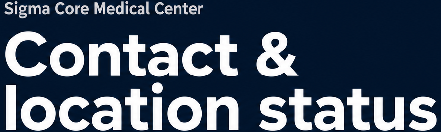
Grid copy 70%/motif 24%, gap 6%; content width:min(100% - 12vw,1344px). Source Sans 3; name 22–28px/600, H1 clamp(56px,7.2vw,112px)/800, line-height:.98, letter-spacing:-.035em. Desktop break after ampersand. White H1, silver name.
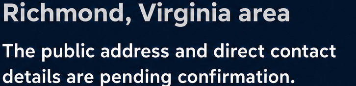
Area Source Sans 3 600, color:#C7CBD0, font-size:clamp(26px,3vw,42px); margin-top:22px. Pending statement white 24–30px/1.4 with max-width:40ch; margin-top:26px.
inline-flex align-items:center; gap:24px; padding:20px 28px; min-height:56px; Source Sans 3 600 24–28px; navy text. Shape is mineral ::before polygon(0 0,95% 0,100% 24%,100% 100%,0 100%); unclipped anchor. Arrow inline SVG path M4 12h20 m-7-7 7 7-7 7, aria-hidden.
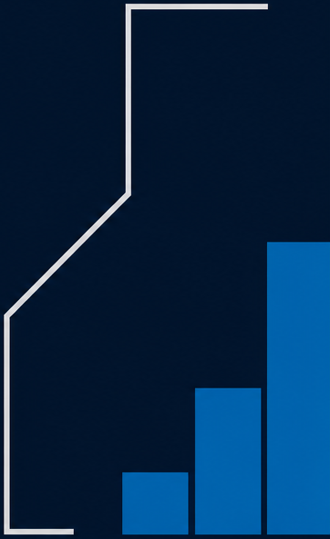
Absolute right SVG viewBox="0 0 1536 864"; polyline points="1468,86 1315,86 1315,292 1181,425 1181,664 1255,664" fill=none stroke=#C7CBD0 stroke-width=6 vector-effect=non-scaling-stroke. Electric rects: x1308 y597 w72 h68; x1388 y504 w72 h161; x1467 y344 w69 h321. No axes/values.
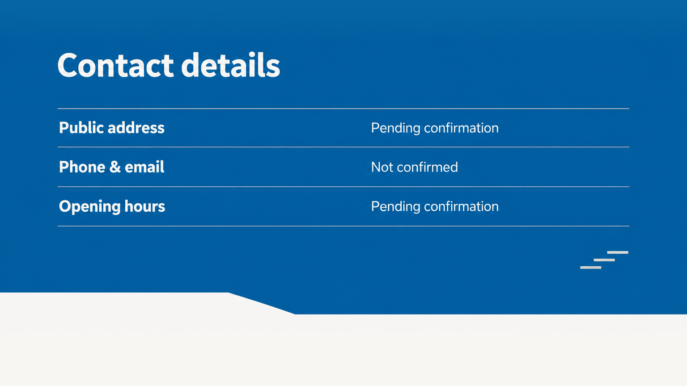
Never aria-hide the containing semantic section or content panel. background:#0666A5; ::after behind content uses #F7F6F3 and polygon(0 0,33.1% 0,42.8% 23.4%,100% 23.4%,100% 100%,0 100%) in a bottom 209px-high band at native scale. Actual content dictates natural height; diagonal only after register.
Source Sans 3 700, white, clamp(36px,4.5vw,64px); max-width:20ch; section content inset 8.4% native and title/register gap 56px.
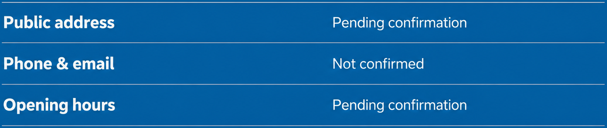
dl margin:0; each row display:grid; grid-template-columns:55% 45%; gap:0; padding-block:22px; border-top:1px solid #C7CBD0; last child border-bottom. dt 28–32px/600; dd same size/400; color:white; all values exact manifest. No icon/button/input/role=status required.
Three simple silver rects with native x/y/w/h:1297/597/47/6;1327/580/47/6;1357/563/47/6. Keep under10% usable width and beneath register without connecting to statuses.
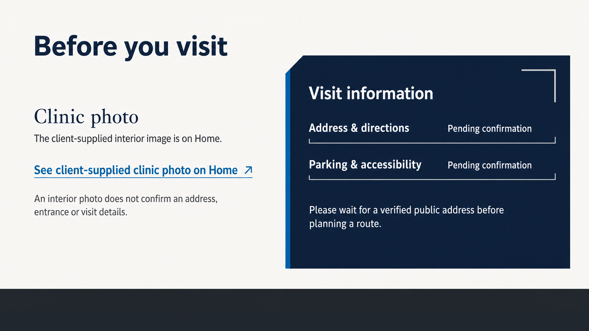
Never aria-hide the containing semantic section or content panel. background:#F7F6F3; charcoal ::after occupies final transition band after content and 48px clearance; native top y754. No grain or image background.
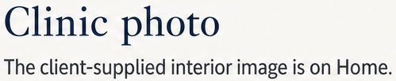
Left desktop column width42%; Playfair Display500 label 40px/1.15; body Source Sans3 24px/1.5. Keep source statement plain and literal; no actual image.
Inline-flex min-height48px; gap10px; color:#0666A5; font24px/600; underline-offset:5px. Label exact manifest; arrow-up-right separate aria-hidden SVG. Never add thumbnail or card background.
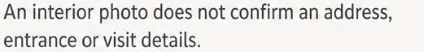
max-width:43ch; Source Sans3 22px/1.5 #55616A; margin-top20px immediately after photo anchor.
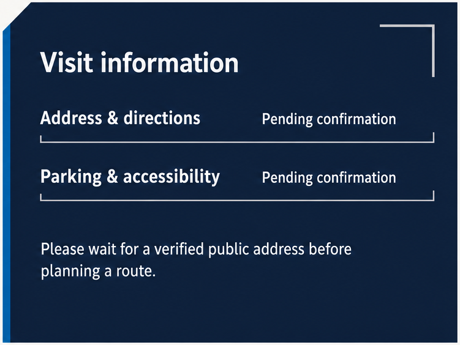
Never aria-hide the containing semantic section or content panel. Use panel position:relative; background pseudo-element inset0; background:#101E33; clip-path:polygon(6.3% 0,100% 0,100% 100%,0 100%,0 8.5%). Content wrapper un-clipped, padding:68px 40px 56px 60px at native scale.
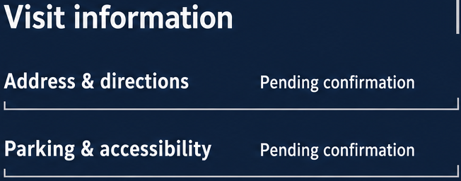
H3 SourceSans3 700 38px white. dl margin-top36px; pair display:grid grid-template-columns:56% 44%, align-items:baseline; padding:20px 0; border-bottom:1px solid #C7CBD0. dt26px/600 and dd24px/400. Native bracket-like upturns are decoration and may be omitted; no textbox role.
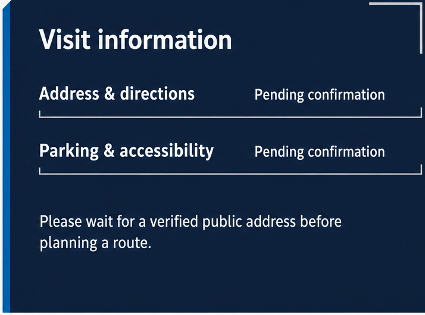
Blue rail absolute left0 top47px bottom0 width12px (scale to8px runtime); silver bracket top36px right38px width88px height84px, border-top/right4px solid #C7CBD0. All pointer-events:none, aria-hidden.
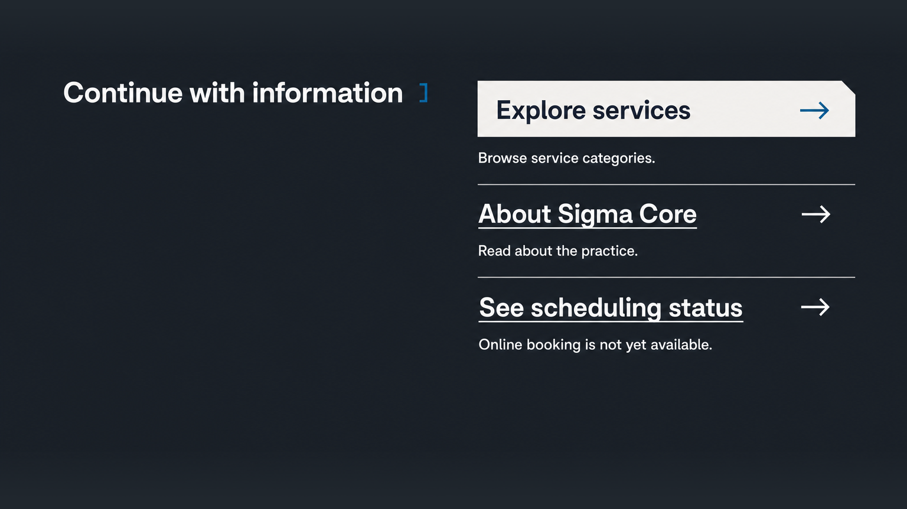
Never aria-hide the containing semantic section or content panel. background:#20272E, no gradients or texture. Grid minmax(0,1fr) minmax(0,1.08fr), gap64px; content width:min(100% - 12vw,1344px); padding-block:120px 150px desktop as starting tokens, tuned to composition.
SourceSans3 700 40–46px white; fits one line in native comp but allow wrapping. Small electric right bracket width12px height30px border-right/top/bottom3px, display inline-block gap24px.
Anchor position:relative display:flex align-items:center justify-content:space-between gap24px; min-height72px; padding20px28px; SourceSans3 700 32–38px #101E33. Mineral pseudo-element clipped top-right polygon(0 0,96.5% 0,100% 24%,100% 100%,0 100%); anchor itself remains unclipped.
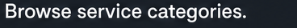
SourceSans3 24px white; margin-top18px; exact Browse service categories.
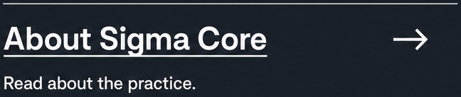
Group border-top1px silver; padding-top24px. Anchor flex gap24px align center; label SourceSans3 600 32–38px white with underline-offset6px; min-height56px. Description24px white margin-top12px. Arrow aria-hidden.
Group border-top1px silver; padding-top24px. Link same secondary style as About. Body exact Online booking is not yet available. with white24px text margin-top12px; no status badge, calendar or date/time widget.
# Contact local staged handoff r1 The local effective contract is the independently reviewed contact-r1 successor. The immutable native and implementation reviews are recorded in section_manifest.json local_effective_handoff, including their hashes. Historical candidate statuses in copied contracts remain producer-era provenance. All canonical fidelity, QA and edge gates remain pending; no flag is promoted. All 24 regions are CODE: 5 hero, 4 details, 9 visit, 6 closing. Their complete original build_note recipes are retained verbatim in both extraction-plan mirrors. Four exact reviewed native frames and the exact page stitch are reference material only. Application source is unchanged and Contact content uses zero runtime rasters. No rerender occurred. Use the observed approximately 55% desktop register value start, with shared baselines and stacked mobile pairs. The historical successor map says 58–64%; its x129–1407 register and x828 values imply 54.695%. Both independent reviews support the 55/45 extraction recipe and existing implementation. Only the local effective map is clarified; its prior text and original hash remain recorded. The native review is CANDIDATE_KEEP_PENDING_IMPLEMENTATION. The subsequent independent review is LOCAL_IMPLEMENTATION_KEEP_PENDING_HANDOFF_AND_SITE_GATES at f5916fb1c9432282ab6ca07a080881799bf5ac92. Its KEEP applies to composition, with recorded spacing qualifications. It is not DIRECTOR_APPROVED, SHIP_READY, source-gate closure, canonical fidelity PASS, or permission to retire assets. Per-section evidence records those findings while retaining every original fidelity PENDING status. Contact stays noindex, follow. Public address, phone/email, opening hours, directions and parking/accessibility remain pending. Inherited brand address/opening-date/photo assertions are archival and cannot populate visible copy, metadata, structured data or hidden runtime data. Book scheduling remains unavailable. The five anchors are information navigation only; destination pages and shared chrome are outside this scoped approval. The strict CODE-only sheet reviews the successor's declared empty runtime asset set. It does not certify the complete public asset directory: two old stored rasters remain there and fail the full-directory strict sheet and unbypassed source audit. They remain registry dependencies. All 51 unresolved assets remain in the ledger; Book is the sole overall audit pass. The old sheet, resources, native refs and contracts are preserved byte-exact in the nonpublic staged-before archive. Stored-copy disclosure: the retained Contact waiting-room file equals Home public/images/shared/waiting-room.png, About public/images/design/about/03-facility-gallery-02-client-waiting-room.png and the supplied waiting-room source. Home owns the live place-of-care occurrence; Contact links to it. The dead Variant A footer source reference is preserved. The shared reception-2 copy and About reception remain public. Duplicate-content scanner PASS counts implementation references and does not certify uniqueness among stored copies. Booking reception has no other exact-byte match in the prior public/supplied-source scan; differently encoded or visually similar images are not ruled out. All 14 edge flags remain false and all 14 QA verdicts remain PENDING. Formal 1536x1024 and 1728x1117 convergence, remote evidence, wider painted-edge work, comprehensive accessibility and Site Review remain open. The fresh local browser regression only checks preservation. Clinical, legal, customer and publication readiness are not established. External canonical promotion and a registry assets-only change remain controller steps, blocked until validated. The separate research-root registry proposal is not applied. Raster archival is a later controller-reviewed task. NO RASTER RETIREMENT or registry/canonical modification occurred. ## Builder source closure r1 Builder-owned source reconciliation only. Fresh matching candidate captures and independent review pending; no visual, edge, registry, convergence or Site Review approval. Earlier approval or pending-retirement statements above are historical and do not promote this candidate. Runtime ownership below supersedes obsolete photo slots. Native frames remain reference evidence. Unsupported public rasters are byte-preserved outside public under assets/retired-photo-roles/. - 01-contact-hero: `src/components/batch-three/contact/hero.tsx`; 0 runtime rasters. Never aria-hide the containing semantic section or content panel. background:#101E33; isolated position:relative. ::after bottom:0; width:100%; height:20.5%; background:#0666A5; clip-path:polygon(0 65%,100% 0,100% 100%,0 100%). Keep this behind content. This reproduces observed full-canvas polygon (0,802),(1536,687),(1536,864),(0,864). Grid copy 70%/motif 24%, gap 6%; content width:min(100% - 12vw,1344px). Source Sans 3; name 22–28px/600, H1 clamp(56px,7.2vw,112px)/800, line-height:.98, letter-spacing:-.035em. Desktop break after ampersand. White H1, silver name. Area Source Sans 3 600, color:#C7CBD0, font-size:clamp(26px,3vw,42px); margin-top:22px. Pending statement white 24–30px/1.4 with max-width:40ch; margin-top:26px. inline-flex align-items:center; gap:24px; padding:20px 28px; min-height:56px; Source Sans 3 600 24–28px; navy text. Shape is mineral ::before polygon(0 0,95% 0,100% 24%,100% 100%,0 100%); unclipped anchor. Arrow inline SVG path M4 12h20 m-7-7 7 7-7 7, aria-hidden. Absolute right SVG viewBox="0 0 1536 864"; polyline points="1468,86 1315,86 1315,292 1181,425 1181,664 1255,664" fill=none stroke=#C7CBD0 stroke-width=6 vector-effect=non-scaling-stroke. Electric rects: x1308 y597 w72 h68; x1388 y504 w72 h161; x1467 y344 w69 h321. No axes/values. - 02-verified-location-details: `src/components/batch-three/contact/details.tsx`; 0 runtime rasters. Never aria-hide the containing semantic section or content panel. background:#0666A5; ::after behind content uses #F7F6F3 and polygon(0 0,33.1% 0,42.8% 23.4%,100% 23.4%,100% 100%,0 100%) in a bottom 209px-high band at native scale. Actual content dictates natural height; diagonal only after register. Source Sans 3 700, white, clamp(36px,4.5vw,64px); max-width:20ch; section content inset 8.4% native and title/register gap 56px. dl margin:0; each row display:grid; grid-template-columns:55% 45%; gap:0; padding-block:22px; border-top:1px solid #C7CBD0; last child border-bottom. dt 28–32px/600; dd same size/400; color:white; all values exact manifest. No icon/button/input/role=status required. Three simple silver rects with native x/y/w/h:1297/597/47/6;1327/580/47/6;1357/563/47/6. Keep under10% usable width and beneath register without connecting to statuses. - 03-facility-image: `src/components/batch-three/contact/facility.tsx`; 0 runtime rasters. Never aria-hide the containing semantic section or content panel. background:#F7F6F3; charcoal ::after occupies final transition band after content and 48px clearance; native top y754. No grain or image background. Source Sans 3 700, navy; clamp(36px,4.5vw,64px); width fit-content. Single desktop line. Left desktop column width42%; Playfair Display500 label 40px/1.15; body Source Sans3 24px/1.5. Keep source statement plain and literal; no actual image. Inline-flex min-height48px; gap10px; color:#0666A5; font24px/600; underline-offset:5px. Label exact manifest; arrow-up-right separate aria-hidden SVG. Never add thumbnail or card background. max-width:43ch; Source Sans3 22px/1.5 #55616A; margin-top20px immediately after photo anchor. Never aria-hide the containing semantic section or content panel. Use panel position:relative; background pseudo-element inset0; background:#101E33; clip-path:polygon(6.3% 0,100% 0,100% 100%,0 100%,0 8.5%). Content wrapper un-clipped, padding:68px 40px 56px 60px at native scale. H3 SourceSans3 700 38px white. dl margin-top36px; pair display:grid grid-template-columns:56% 44%, align-items:baseline; padding:20px 0; border-bottom:1px solid #C7CBD0. dt26px/600 and dd24px/400. Native bracket-like upturns are decoration and may be omitted; no textbox role. SourceSans3 24px/1.5 white; max-width:42ch; margin-top:44px after dl. Exact sentence from manifest. Blue rail absolute left0 top47px bottom0 width12px (scale to8px runtime); silver bracket top36px right38px width88px height84px, border-top/right4px solid #C7CBD0. All pointer-events:none, aria-hidden. - 04-booking-cta: `src/components/batch-three/contact/booking.tsx`; 0 runtime rasters. Never aria-hide the containing semantic section or content panel. background:#20272E, no gradients or texture. Grid minmax(0,1fr) minmax(0,1.08fr), gap64px; content width:min(100% - 12vw,1344px); padding-block:120px 150px desktop as starting tokens, tuned to composition. SourceSans3 700 40–46px white; fits one line in native comp but allow wrapping. Small electric right bracket width12px height30px border-right/top/bottom3px, display inline-block gap24px. Anchor position:relative display:flex align-items:center justify-content:space-between gap24px; min-height72px; padding20px28px; SourceSans3 700 32–38px #101E33. Mineral pseudo-element clipped top-right polygon(0 0,96.5% 0,100% 24%,100% 100%,0 100%); anchor itself remains unclipped. SourceSans3 24px white; margin-top18px; exact Browse service categories. Group border-top1px silver; padding-top24px. Anchor flex gap24px align center; label SourceSans3 600 32–38px white with underline-offset6px; min-height56px. Description24px white margin-top12px. Arrow aria-hidden. Group border-top1px silver; padding-top24px. Link same secondary style as About. Body exact Online booking is not yet available. with white24px text margin-top12px; no status badge, calendar or date/time widget.